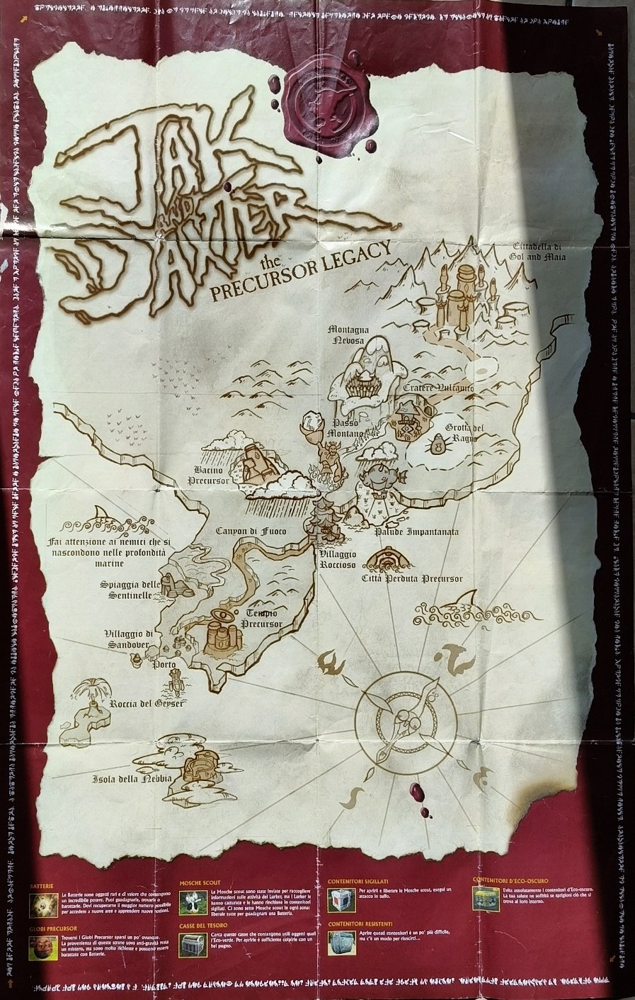

The last Manual
Home
Giochi
Info
Jak and Daxter: precursor legacy
Anno di rilascio: 4 Dicembre, 2001
Sviluppatore: Naughty Dog
Piattaforma: Playstastion 2
Categoria: Avventura, 3D Platform
foto manuali

PDF Mappa
PDF Volantino
Copertine in diverse lingue
Italiano
Giapponese